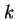
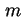
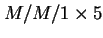
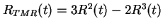
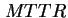
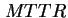
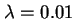
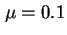

Next: List of Tables
Up: perf
Previous: Contents
Contents
Index
- การแจกแจงบริการของระบบ
- เวลาตอบสนองนิยาม 1
- เวลาตอบสนองนิยาม 2
- อัตราผลสำเร็จที่สามารถทำได้ของระบบ
- อัตราผลสำเร็จที่สามารถทำได้ของระบบ
- ตัวอย่างทฤษฎีคิว: การบริการห้องปฏิบัติการคอมพิวเตอร์
- ตัวแปรสุ่มที่สำคัญในการวิเคราะห์ระบบคิว
- ระบบแบบ Blackbox
- ความสัมพันธ์ 3 ลักษณะ พิสูจน์กฏของ Little
- กฎของ Little สามารถใช้งานได้กับทุกระบบ และทุกระบบย่อย
- การรวมกระแสการเข้าใช้งานระบบแบบพัวซอง
- การแยกกระแสการเข้าใช้งานระบบแบบพัวซองออกเป็นกระแสย่อยจำนวน  กระแส
- กระแสงาน: เมื่อกระแสการเข้าใช้งานเป็นพัวซอง กระแสของงานที่ออกจากระบบมีลักษณะเป็นพัวซอง
- กระแสงาน: เมื่อกระแสการเข้าใช้งานเป็นพัวซอง กระแสของงานที่ออกจากระบบมีลักษณะเป็นพัวซอง กรณีที่เป็นระบบคิวที่มีเครื่องบริการ  เครื่อง
- แผนภาพแสดงการเปลี่ยนสถานะของกระบวนการเกิด-ดับ
- แถวคอย

- แผนภาพแสดงการเปลี่ยนสถานะของคิว
- แถวคอย

- แผนภาพแสดงการเปลี่ยนสถานะของกระบวนการเกิด-ดับ
ของคิว
- ระบบคิว
 กับ

- การเปลี่ยนสถานะของกระบวนการเกิด-ดับ ของ คิว

- ระบบเครือข่ายคิวแบบเปิด
- ระบบเครือข่ายคิวแบบปิด
- ระบบเครือข่ายคิวแบบผสม
- ระบบเครือข่ายคิวที่มีเครื่องบริการเดี่ยวจำนวน
 -
เครื่องต่ออนุกรมกัน
-
เครื่องต่ออนุกรมกัน
- ระบบเครือข่ายคิวแบบปิดที่ประกอบด้วยคิวสองชุด
- แบบจำลองการซ่อมบำรุง
- แบบจำลองเครื่องบริการกลาง
- ระบบ Blockbox: เราสามารถวัดจำนวนงานที่เข้าใช้ระบบ และออกจากระบบได้.
- รูปแบบภายในของระบบ
- แบบจำลองเครื่องบริการกลาง (Time Sharing System)
- Asymptotic Bounds สำหรับกรณีทั่วไป
- Asymptotic Bounds ของ เวลาตอบสนองและอัตราความสำเร็จ
- ระบบบริการแฟ้มข้อมูล
- อัลกอริทึ่มวิเคราะห์ค่าเฉลี่ยของเครือข่ายคิวแบบปิด
- ระบบ Time Sharing
- การแจกแจงบริการของระบบ
- ระบบควบคุมยานอวกาศวอยเยเจอร์ เป็นตัวอย่างของการประยุกต์ของระบบที่มีอายุการใช้งานยาว
- ระบบควบคุมการบินของเครื่อบิน X-29 เป็นตัวอย่างการประยุกต์ของระบบคำนวณที่มีความสำคัญ
- ตัวประมวลผลรุ่น 3B20D ที่ใช้ในระบบสวิทช์อิเล็กทรอนิกส์
เป็นตัวอย่างการประยุกต์ของระบบที่ต้องการยืดเวลาการซ่อมบำรุง
- ลำดับของการเกิดของความเสียหาย, ความผิดพลาด, และความล้มเหลว
- สาเหตุของความเสียหายที่มาจาก ข้อกำหนด (Specifications), การสร้างและการติดตั้ง (Implementation), ตัวอุปกรณ์ (Components),
และผลกระทบภายนอก (External Factors)
- ขอบเขตการทำงานของเทคนิคสามประการ:
การหลีกเลี่ยงความเสียหาย, การซ่อนความเสียหาย, และการคงทนต่อความเสียหาย
- ระบบ Triple Modular Redundancy
- ระบบ Triple Modular Redundancy ที่ใช้อุปกรณ์โหวตสามชุด
- ระบบ Triple Modular Redundancy ที่มีหลายลำดับชั้น
ที่ใช้อุปกรณ์โหวตสามชุดในทุกระดับ เพื่อไม่ให้ค่าผิดพลาดสามารถส่งผ่านระหว่างระดับ
- ระบบ N Modular Redundancy (NMR)
- ระบบ 3 ใน 5-5MR
- ระบบที่มีการเปรียบเทียบการทำงานสองระบบที่ทำงานพร้อมกัน
- ระบบสำรองพร้อมทำงาน
- ระบบสำรองแบบจับคู่ (Pair and a Spare)
- ระบบ NMR ที่มีโมดูลสำรอง
- ระบบสำรองแบบจัดรูปแบบการทำงานของตัวเอง
- ความสัมพันธ์ระหว่างฟังก์ชั่นของอัตราความเสียหายกับเวลา
เป็นเส้นโค้งที่มีรูปลักษณะอ่างน้ำ
- ความสัมพันธ์ระหว่าง
MTTF และ MTTR โดยสมมุติว่าระบบมีคุณภาพการทำงานเสมือนใหม่หลังการซ่อมแซม
- แผนภาพกล่องของระบบอนุกรม
- แผนภาพกล่องของระบบขนาน
- ระบบ TMR
- ความสัมพันธ์ระหว่าง ค่าความน่าเชื่อถือของระบบ TMR กับ ค่าความน่าเชื่อถือของโมดูล (
 กับ
 )
)
- สถาปัตยกรรมของระบบควบคุมการบิน
- แผนภาพกล่องความน่าเชื่อถือของระบบควบคุมการบิน
- สถาปัตยกรรมพื้นฐานของระบบคอมพิวเตอร์ในการประยุกต์ใช้งานอวกาศ
- แผนภาพกล่องความน่าเชื่อถือของระบบคอมพิวเตอร์ในการประยุกต์ใช้งานอวกาศ
- การยุบระบบแบบขนานให้เหมือนกับเป็นโมดูลเดียว
- แผนภาพกล่องความน่าเชื่อถือที่ลดทอนแล้วของระบบคอมพิวเตอร์ ในการประยุกต์ใช้งานอวกาศ
- แผนภาพกล่องความน่าเชื่อถือของระบบขนานที่ประกอบด้วยสองโมดูล
เพื่อแสดงผลกระทบของการคุ้มครองจากความเสียหาย
- ผลกระทบจากการคุ้มครองจากความเสียหายของระบบแบบขนานที่ประกอบด้วยสองโมดูล
- ผลกระทบจากการคุ้มครองจากความเสียหายของระบบแบบขนานที่ประกอบด้วยสองโมดูล โดยที่ระบบจะทำการเปรียบเทียบเอาท์พุทที่ได้จากทั้งสองโมดูลเพื่อทำการตรวจสอบข้อผิดพลาด และหาโมดูลที่เสีย
- ระบบคงทนต่อความเสียหาย 2 ใน 3 TMR
- การเปลี่ยนแปลงสถานะของระบบ TMR
- แผนภาพแสดงการเปลี่ยนแปลงสถานะของระบบ TMR แสดงความน่าจะเป็นในการเปลี่ยนแปลงสถานะ
- การเปลี่ยนแปลงสถานะของระบบ TMR โดยจำนวนสถานะน้อยที่สุด สถานะประกอบด้วย-ระบบสมบูรณ์, ระบบเสียหนึ่งโมดูล, และระบบล้มเหลว
- ระบบที่คงทนต่อความเสียหาย ประกอบด้วยโมดูลสามโมดูลทำงานพร้อมกัน ระบบสามารถตรวจสอบสภาพการทำงานได้ว่า โมดูลทำงานปกติหรือมีความเสียหาย
- การเปลี่ยนแปลงสถานะของระบบที่คำนึงถึงผลกระทบจากเฟคเตอร์ความคุ้มครองจากความเสียหาย สถานะประกอบด้วย-ระบบสมบูรณ์, ระบบเสียหนึ่งโมดูล หรือ สองโมดูล, ระบบไม่สามารถตรวจจับความเสียหาย,และระบบล้มเหลว
- แบบจำลองมาร์คอฟของระบบที่มีการซ่อม
- ความสัมพันธ์ระหว่างความน่าจะเป็นที่ระบบอยู่ในสถานะ
 (ทำงานปกติ) เทียบกับอัตราการซ่อม (Repair Rate)
(ทำงานปกติ) เทียบกับอัตราการซ่อม (Repair Rate)
- แบบจำลองมาร์คอฟของความปลอดภัยที่ประกอบด้วยสามสถานะ, ใช้งานได้ (Operational, การล้มเหลวที่มีการหยุด การทำงานอย่างปลอดภัย (FS: Failed Safe) และการล้มเหลวที่มีการหยุดการทำงานอย่างไม่ปลอดภัย
(FU: Failed Unsafe)
- เปรียบเทียบระบบคอมพิวเตอร์เดี่ยว และระบบ TMR
- ค่าความน่าเชื่อถือเทียบกับ

- แนวคิดของเวลาปฏิบัติงาน และ การปรับปรุงเวลาปฏิบัติงาน สำหรับการเปรียบเทียบระบบ Simplex และ ระบบ TMR ที่อัตราความเสียหายเท่ากับ 0.01 ความเสียหายต่อชั่วโมง
- ค่า
 และ 
และ 
- แบบจำลองมาร์คอฟของระบบที่มีการซ่อม
- ค่าความสามารถในการคงการบริการ: ค่าอัตราความเสียหาย
 และอัตราการซ่อมเท่ากับ 
- ความสามารถในการบำรุงรักษา (Maintainability) เทียบกับเวลา ในค่า ที่แตกต่างกัน
Vara Varavithya
2002-03-09